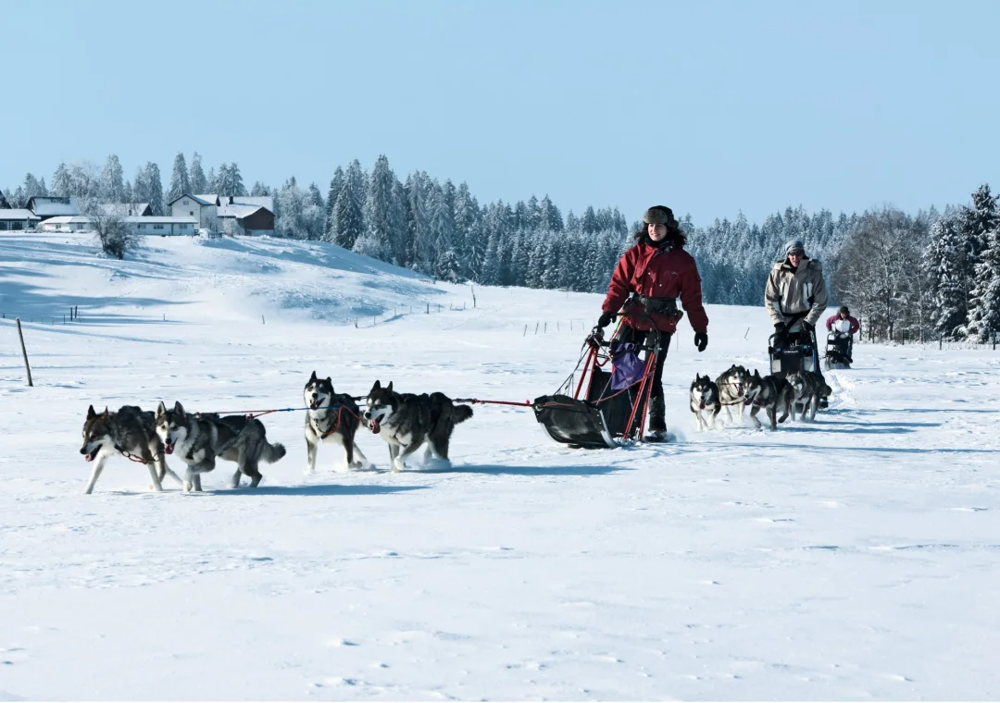
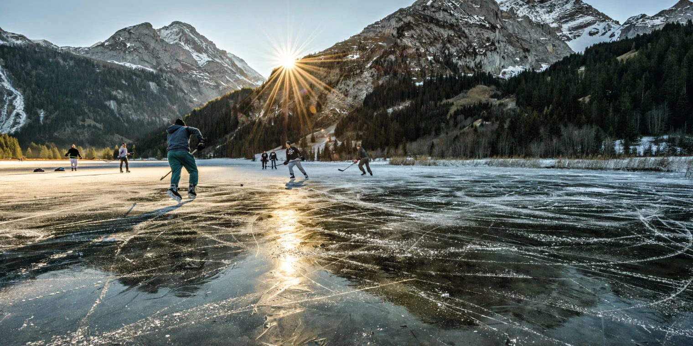
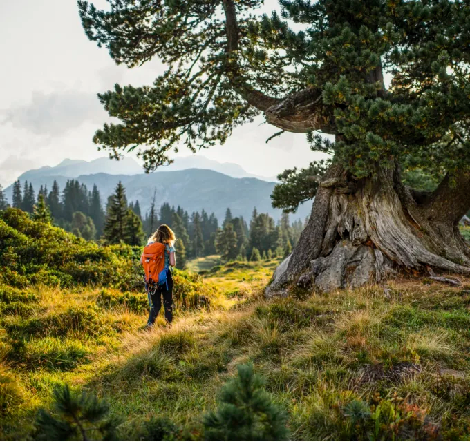
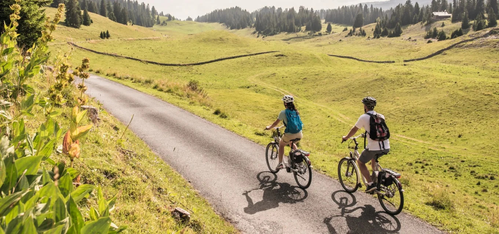

Estamos listos para recibirte durante todo el año
En Suiza simplemente te sentirás dentro de un cuento de hadas, cada época del año esta cubierta con un manto de aventura y diversión aquí te mostraremos solo algunas de las opciones más famosas entre nuestros visitantes pero recuerda que siempre puedes contáctenos para ayudarte a planificar ¡las mejores vacaciones de tu vida!
Mágicas aventuras invernales
Descubre la magia del invierno suizo, desde emocionantes descensos en esquí hasta noches estrelladas sobre hielo.
-
Esquí y Snowboard
Deslízate por pendientes legendarias y disfruta de la nieve polvo en su máxima expresión. Suiza ofrece una experiencia de esquí y snowboard incomparable, con pistas para todos los niveles y gustos.
-
Deslizarse en trineo
Explora la belleza del invierno suizo de una forma única: deslizándote en trineo por colinas nevadas. Una actividad familiar que combina diversión y paisajes de ensueño.
-
Patinaje sobre hielo
Experimenta la magia del patinaje sobre hielo en entornos naturales y urbanos, donde la tradición y la belleza suiza se unen para crear momentos inolvidables.
Hermosas praderas durante el verano y otoño
Descubre el vibrante verde de las praderas suizas y los tonos dorados del otoño en un paisaje de postal.
-
Senderismo
Suiza se descubre a pie, con rutas de senderismo que ofrecen vistas panorámicas, aire puro de montaña y la esencia de la naturaleza en cada paso.
-
Suiza en bici
Explora Suiza sobre dos ruedas, disfrutando de la libertad y las impresionantes vistas que ofrecen sus bien planificadas rutas ciclistas. Una aventura activa para todos.
-
Rafting o descenso con canoa
Vive la adrenalina del rafting y el descenso en canoa en los caudalosos ríos de Suiza, donde cada curva revela nuevas emociones y paisajes espectaculares.